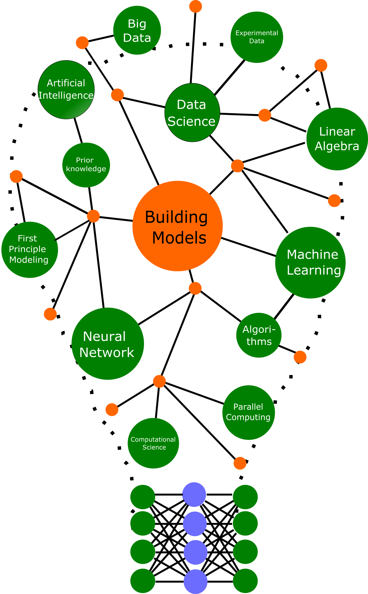

About Him

He is a team leader of Physics-Enhanced Machine Learning at Max Planck Institute (MPI-DCTS), Magdeburg, Germany, in the department led by Prof. Dr. Peter Benner. In 2018, he received his Ph.D. degree in the field of computational mathematics in his group as well. In his Ph.D. research, he developed various methodologies to construct low-dimensional dynamical models of high-dimensional dynamical models from system-theoretic perspectives.
He was awarded the prize for the best Ph.D. thesis within the Faculty of Mathematics by the Otto von Guericke University Magdeburg, Germany, and GAMM also awarded him Dr. Klaus Körper prize for his excellent Ph.D. thesis in the field of Applied Mathematics and Mechanics.
His primary research is centered around machine learning for dynamical systems. He investigates how various machine learning methods, particularly deep learning-based, can facilitate dynamical system modeling, easing the engineering design process and predictions. Moreover, incorporating prior knowledge about system processes helps efficient and robust modeling with limited data. It goes towards scientific machine learning. Furthermore, he explores the image reconstruction problem in computed tomography using deep learning. He is currently a part of Max Planck research network on big data-driven material science (BiGmax) to examine how machine learning can push new findings in material science.Research Interests
Latest News
-
01/02/2022: We have a new postdocal position opening in our department on identifying suitable embeddings for dynamical systems using deep learning. More details can be found here. The call ends on 28/02/2022.
-
12/12/2021: Our work on Learning Dynamics from Noisy Measurements using Deep Learning with a Runge-Kutta Constraint, was presented at the workshop on The Symbiosis of Deep Learning and Differential Equations Workshop at NeurIPS 2021, 2021.
-
25/11/2021: We have published a preprint, entitled A Learning Low-Dimensional Quadratic-Embeddings of High-Fidelity Nonlinear Dynamics using Deep Learning , where we show how a quadratic model can respresent any smooth nonlinear systems in an appropriate embeddings. [PDF].